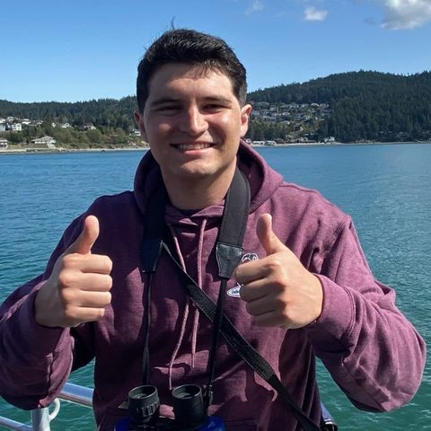

I take a messy biological question, turn it into a plan, run it, and explain the answer to people outside the field.
That is the core of a consulting engagement, a diligence call and an R&D program. Here is the evidence for each.

PhD, Bioengineering · Rice University
Defending November 2026
I study how cancer cells leave a tumor and survive the bloodstream.
Six years running a fellowship-funded research program in cancer metabolism, transcriptomics and mechanobiology. Now looking for roles in life sciences consulting, biotech venture scouting and industry R&D.
I take a messy biological question, turn it into a plan, run it, and explain the answer to people outside the field.
That is the core of a consulting engagement, a diligence call and an R&D program. Here is the evidence for each.
I turn open scientific questions into a work plan and present the answer to non-specialists.
I read across oncology, immunology, metabolism and mechanobiology and can tell a strong result from a weak one.
I build models of the tumor environment and pair them with quantitative readouts and reproducible analysis: 3D culture, hydrogels, flow systems and Seahorse metabolic assays, analyzed with R and MATLAB pipelines my lab adopted. I also recruited and led a team of five student researchers.
Most cancer deaths come from metastasis. To spread, a tumor cell has to push out through dense tissue, then survive the bloodstream, where fluid forces destroy most cells.
Genes, 2026 doi.org/10.3390/genes17091042 ↗
Cancer Cell Migration and Adaptation to Fluid Shear Stress: Transcriptional, Phenotypic, and Metabolic DeterminantsDissertation · Advisor Cynthia A. Reinhart-King, PhD
Vanderbilt University 2020–2024 · Rice University 2024–2026
I sorted cancer cells by how well they migrate and sequenced the fastest movers across several cancer types. Each type got there with different genes, but they converged on the same regulatory programs, which points to shared targets for blocking spread.
Co-first author · Genes, 2026 · DOI ↗
Using flow systems that reproduce the forces in blood vessels, I showed that shear stress acts as a filter. It enriches for mesenchymal-like circulating tumor cells, the more invasive phenotype, through mechanical selection.
First author · Journal of Cell Science, 2026 · DOI ↗
Suspension drains a cell's energy. With Seahorse extracellular flux analysis I found that shear activates calcium ion channels, which drive the cell's recovery of ATP. I also wrote a review of how mechanical forces shape cell metabolism.
First author · manuscript in preparation · review in EMBO Reports, 2026
Related work in tumor immunology measured how engineered liposomes attached to T cells hold up as the cells invade tissue (co-first author, Journal of Immunological Methods, 2024). Earlier studies cover how tissue density and tension shape cancer cell migration and energy use (PNAS, Biomaterials, iScience).
I. Ortiz, V.L. Dunagan, J.D. Greenlee, K.M. Young, J.V. Hernandez, P.V. Taufalele, M. Lopez-Cavestany, W. Wang, F. Bordeleau, M.R. King, C.A. Reinhart-King
I. Ortiz*, P.V. Taufalele*, V.L. Dunagan, L.A. Hapach, J. Wang, Q. Liu, C.A. Reinhart-King
I. Ortiz, S. Lopez, R. Kondapaneni, J.V. Hernandez
M.R. Zanotelli, J.P. Miller, W. Wang, I. Ortiz, E. Tahon, F. Bordeleau, C.A. Reinhart-King
S.M. King*, I. Ortiz*, N.S. Sarna*, W. Wang, M. Lopez-Cavestany, Z. Zhang
S.C. Schwager*, J.A. Mosier*, R.S. Padmanabhan, A. White, Q. Xing, L.A. Hapach, P.V. Taufalele, I. Ortiz, C.A. Reinhart-King
M.R. Zanotelli, J. Zhang, I. Ortiz, W. Wang, N. Chada, C.A. Reinhart-King
V. Mayo, A. Bowles, L. Wubker, I. Ortiz, A. Cordoves, R. Cote, D. Correa, A. Agarwal
I. Ortiz, V.L. Dunagan, V. Tupule, W. Wang, G. Vasiukov, M.R. King, C.A. Reinhart-King
* Authors contributed equally. Full record on Google Scholar.
I. Ortiz, V.L. Dunagan, N.S. Sarna, W. Wang, G. Vasiukov, M.R. King, C.A. Reinhart-King
I. Ortiz, J.D. Greenlee, W. Wang, K.M. Young, V.L. Dunagan, P.V. Taufalele, M. Lopez-Cavestany, M.R. King, C.A. Reinhart-King
P.V. Taufalele*, I. Ortiz*, J. Wang, Q. Liu, C.A. Reinhart-King
V.L. Dunagan, I. Ortiz, C.A. Reinhart-King
S.M. King, N.S. Sarna, I. Ortiz, M. Lopez-Cavestany, Z. Zhang
I. Ortiz, J.D. Greenlee, P.V. Taufalele, S.C. Schwager, J.A. Mosier, M.R. King, C.A. Reinhart-King
I. Ortiz, J.D. Greenlee, P.V. Taufalele, S.C. Schwager, J.A. Mosier, M.R. King, C.A. Reinhart-King
I. Ortiz, J.D. Greenlee, P.V. Taufalele, S.C. Schwager, J.A. Mosier, M.R. King, C.A. Reinhart-King
M.R. Zanotelli, I. Ortiz, J. Zhang, W. Wang, N.C. Chada, C.A. Reinhart-King
I. Ortiz, S.C. Schwager, P.V. Taufalele, J.A. Mosier, C.A. Reinhart-King
I. Ortiz, S.C. Schwager, J.A. Mosier, P.V. Taufalele, C.A. Reinhart-King
I. Ortiz, S.C. Schwager, J.A. Mosier, C.A. Reinhart-King
V. Mayo, A. Bowles, A. Cordoves, L. Wubker, I. Ortiz, D. Correa, A. Agarwal
I. Ortiz, V. Mayo, A. Agarwal
BMES: Biomedical Engineering Society. VICC: Vanderbilt-Ingram Cancer Center. * Authors contributed equally.
Rice University and Vanderbilt University
Vanderbilt University undergraduate research program
University of Miami · Advisor Ashutosh Agarwal, PhD
University of Miami · Advisor James D. Englehardt, PhD
University of Miami · Dean's List · Canes Achievement Award · Florida Bright Futures Medallion Scholar
Directed and edited Independence with Autism for South Florida PBS.
Watch the film ↗Served as the University of Miami mascot and marketing intern, representing the brand at games, events and commercials.
Read the story ↗Counselor and fundraiser for a free summer camp for kids whose parents have or had cancer, later on the Vanderbilt chapter's alumni advisory board.
Mentor in Vanderbilt's BME program for underrepresented students. Taught science to elementary students and gave guest lectures at Glencliff High School in Nashville.
I'm open to conversations about consulting, venture and R&D roles starting in 2027. Email is the best way to reach me.
ismaelortiz.bme@gmail.com